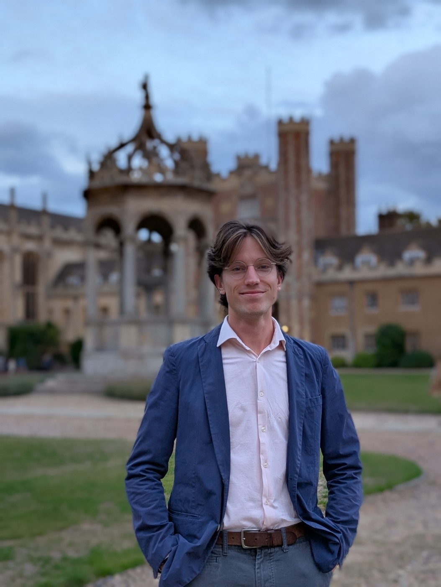

Patrick de Bruijn
PhD candidate in Physical Oceanography
Promovendus in de fysische oceanografie
Delft University of Technology
Technische Universiteit Delft
About
Over mij
I am a PhD candidate in physical oceanography at Delft University of Technology. My research is on coastally trapped waves and their role in the oceanic waveguide. More specifically, I am interested in how boundary processes connect to the ocean interior.
Ik ben promovendus in de fysische oceanografie aan de Technische Universiteit Delft. Mijn onderzoek gaat over kustgebonden golven en hun rol in de oceanische golfgeleider. Ik ben vooral geïnteresseerd in hoe processen aan de randen van de oceaan verbonden zijn met het binnenste van de oceaan.
Interests
Interesses
- Coastally trapped waves
- The oceanic waveguide
- Exchange of information between the boundary and the interior
- Kustgebonden golven
- De oceanische golfgeleider
- Uitwisseling van informatie tussen de rand en het binnenste van de oceaan
Education
Opleiding
- 2025–present2025–heden PhD, Physical Oceanography PhD, Fysische Oceanografie Delft University of Technology, Delft, the Netherlands Technische Universiteit Delft, Delft, Nederland
- 2022–2025 MSc, Hydraulic Engineering Delft University of Technology, Delft, the Netherlands Technische Universiteit Delft, Delft, Nederland
- 2018–2021 BSc, Civil Engineering BSc, Civiele Techniek Delft University of Technology, Delft, the Netherlands Technische Universiteit Delft, Delft, Nederland